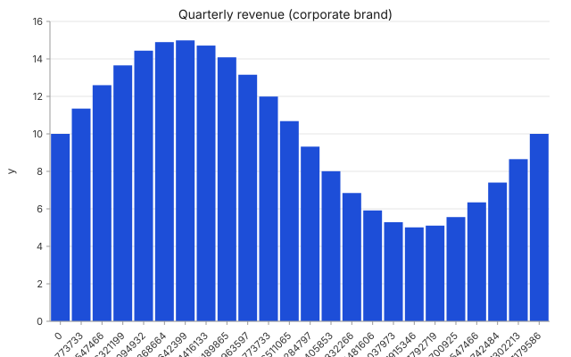
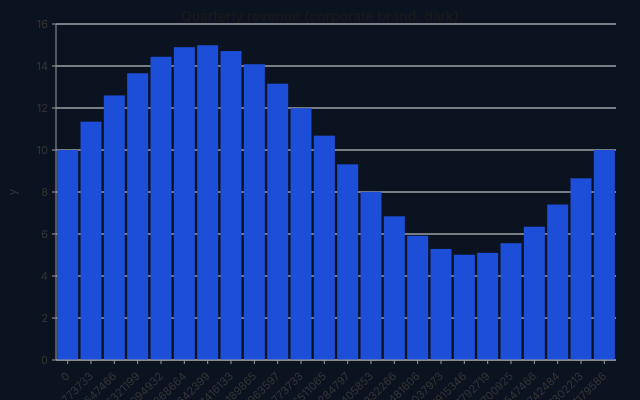

One brand kit. Light + dark in one swap.
Vega themes are flat. Plotly templates are opaque JSON blobs.
D3 makes you re-style every chart by hand. Glyph compiles a
structured BrandKit — palette, typography,
spacing, a11y — into every chart, and lets dark mode happen
with a single swap of palette.surface.


Spec
{
"version": "glyph/0.1",
"data": { "function": { "shape": "function",
"x": { "min": 0, "max": 6.283, "samples": 24 },
"expr": "10 + 5 * sin(x)" } },
"layers": [{ "mark": "bar",
"encoding": { "x": "x",
"y": { "field": "y", "scale": { "domain": [0, 20] } } } }],
"brand": {
"format": "glyph-brand/1",
"palette": {
"categorical": ["#1d4ed8", "#f59e0b", "#10b981", "#ef4444"],
"surface": { "fg": "#0f172a", "bg": "#ffffff",
"muted": "#64748b", "border": "#e2e8f0" }
},
"typography": { "fontFamily": "Inter, sans-serif",
"fontSize": 13, "titleScale": 1.2 },
"spacing": { "unit": 4, "plotMargin": 4 },
"accessibility": { "minContrastRatio": 4.5,
"colorBlindSafe": true }
}
}
Composition: dark mode is one swap of
palette.surface — the categorical palette,
typography, and spacing stay identical. The same trick scales
to N charts that share a brand kit: declare once, reuse
everywhere.
Accessibility is a token, not a footnote:
accessibility.minContrastRatio is enforced by
AUDIT-11, which fires the moment fg/bg drop
below the threshold. Set colorBlindSafe: true and
the auditor also checks the categorical palette under a
deuteranopia simulation matrix.